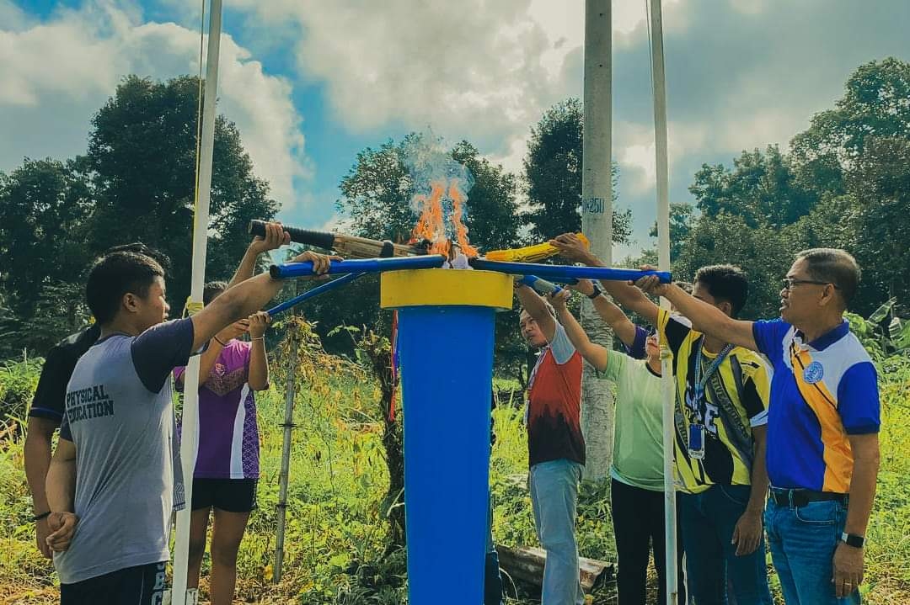

Southern Baptist College, Inc.
Pasundayag Kag Hinampang
Pasundayag Kag Hinampang is a vibrant sports event that encapsulates 
the spirit of camaraderie and competition in the local community.
This annual extravaganza showcases a diverse array of traditional and
indigenous sports,
creating an immersive experience that celebrates
both athleticism and cultural heritage.
Participants engage in spirited contests, ranging from traditional games
rooted in local customs to more contemporary athletic competitions.
The event serves as a unifying platform, fostering a sense of pride and
connection among participants and spectators alike.
With colorful festivities, lively music, and the thrill of friendly competition,
Pasundayag Kag Hinampang stands as a testament to the rich tapestry of sports
and culture within the community.